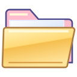

PC 바탕화면
images/wallpaper-desktop.png

1920 × 1080
배경 전체를 덮는 이미지. cover로 잘리므로 중요한 요소는 중앙에 배치.기본 연결은 PNG이며 SVG 원본도 함께 있습니다. 같은 이름의 PNG를 덮어쓰면 적용됩니다. 배경·프레임은 투명 더미라 바둑판만 보이는 것이 정상입니다. 교체 방법은 README.md를 참고하세요.
사이트 열기 ↗images/wallpaper-desktop.png1920 × 1080
배경 전체를 덮는 이미지. cover로 잘리므로 중요한 요소는 중앙에 배치.images/wallpaper-mobile.png1080 × 1920
세로 화면용. 700px 이하에서 적용.
images/login-background.png1920 × 1080
로그인 화면의 배경. cover로 표시.
images/window-frame.png120 × 120
9-slice: 상하좌우 12px를 모서리로 사용. 가운데는 투명.images/login-frame.png120 × 120
9-slice: 상하좌우 12px. 가운데 투명.
images/pinned-frame.png120 × 120
9-slice: 상하좌우 12px. 가운데 투명.
images/titlebar-active.png1000 × 48
가로로 늘어나며 버튼과 제목은 HTML로 유지.images/titlebar-inactive.png1000 × 48
다른 창이 선택되었을 때.images/button-primary.png400 × 60
텍스트는 HTML로 표시. 배경만 제작.images/taskbar.png1920 × 64
가로로 늘어나며 시작·창 목록·시계는 HTML로 유지.images/start-button.png160 × 60
아이콘과 시작 텍스트는 HTML로 유지.images/start-menu.png360 × 600
메뉴 항목은 HTML로 유지. 배경은 늘어나므로 단순 패턴 권장.images/window-surface.png1200 × 800
작품 상세/프로필 콘텐츠의 배경은 변경하지 않음.images/avatar.png256 × 256
정사각형, 투명 배경 권장images/control-minimize.png64 × 64
버튼 전체 디자인과 기호 포함. 클릭 기능은 HTML 유지.images/control-maximize.png64 × 64
버튼 전체 디자인과 기호 포함. 클릭 기능은 HTML 유지.images/control-close.png64 × 64
버튼 전체 디자인과 기호 포함. 클릭 기능은 HTML 유지.icons/folder.png128 × 128
투명 배경, 정사각형 아트보드 권장
icons/stage.png128 × 128
투명 배경, 정사각형 아트보드 권장icons/production.png128 × 128
투명 배경, 정사각형 아트보드 권장icons/3d.png128 × 128
투명 배경, 정사각형 아트보드 권장icons/vmd.png128 × 128
투명 배경, 정사각형 아트보드 권장icons/profile.png128 × 128
투명 배경, 정사각형 아트보드 권장icons/contact.png128 × 128
투명 배경, 정사각형 아트보드 권장icons/works.png128 × 128
투명 배경, 정사각형 아트보드 권장icons/readme.png128 × 128
투명 배경, 정사각형 아트보드 권장icons/start.png128 × 128
투명 배경, 정사각형 아트보드 권장